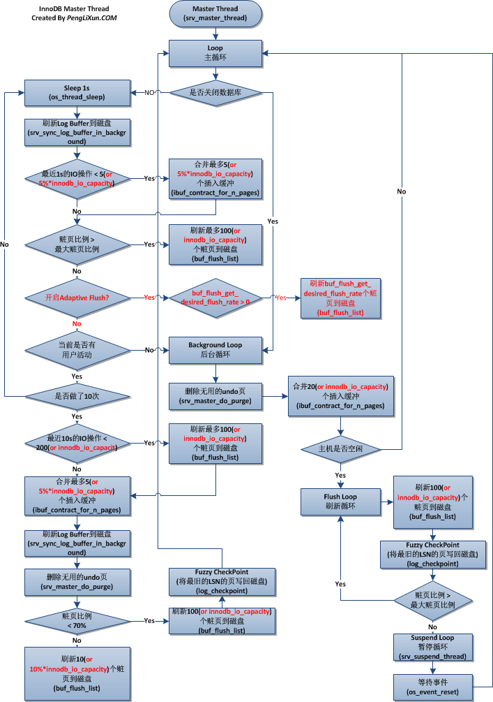

本文最后更新于：2020年7月22日 晚上
1. innodb的总体架构
innodb线程与文件的关系4:
innodb文件结构9:

InnoDB所有数据都被逻辑地存放在一个表空间（tablespace）中。表空间又由段（segment）、区（extent）、页（page）组成，页在一些文档中有时也称为块（block）。逻辑存储结构大致如下图8：

table的数据结构
/** Data structure for a database table. Most fields will be
initialized to 0, NULL or FALSE in dict_mem_table_create(). */
struct dict_table_t {
/** Get reference count.
@return current value of n_ref_count */
inline ulint get_ref_count() const;
/** Acquire the table handle. */
inline void acquire();
/** Release the table handle. */
inline void release();
/** Id of the table. */
table_id_t id;
/** Memory heap. If you allocate from this heap after the table has
been created then be sure to account the allocation into
dict_sys->size. When closing the table we do something like
dict_sys->size -= mem_heap_get_size(table->heap) and if that is going
to become negative then we would assert. Something like this should do:
old_size = mem_heap_get_size()
mem_heap_alloc()
new_size = mem_heap_get_size()
dict_sys->size += new_size - old_size. */
mem_heap_t* heap;
/** Table name. */
table_name_t name;
/** NULL or the directory path where a TEMPORARY table that was
explicitly created by a user should be placed if innodb_file_per_table
is defined in my.cnf. In Unix this is usually "/tmp/...",
in Windows "temp\...". */
const char* dir_path_of_temp_table;
/** NULL or the directory path specified by DATA DIRECTORY. */
char* data_dir_path;
/** NULL or the tablespace name that this table is assigned to,
specified by the TABLESPACE option.*/
id_name_t tablespace;
/** Space where the clustered index of the table is placed. */
uint32_t space;
/** Stores information about:
1 row format (redundant or compact),
2 compressed page size (zip shift size),
3 whether using atomic blobs,
4 whether the table has been created with the option DATA DIRECTORY.
Use DICT_TF_GET_COMPACT(), DICT_TF_GET_ZIP_SSIZE(),
DICT_TF_HAS_ATOMIC_BLOBS() and DICT_TF_HAS_DATA_DIR() to parse this
flag. */
unsigned flags:DICT_TF_BITS;
/** Stores information about:
1 whether the table has been created using CREATE TEMPORARY TABLE,
2 whether the table has an internally defined DOC ID column,
3 whether the table has a FTS index,
4 whether DOC ID column need to be added to the FTS index,
5 whether the table is being created its own tablespace,
6 whether the table has been DISCARDed,
7 whether the aux FTS tables names are in hex.
8 whether the table is instinc table.
9 whether the table has encryption setting.
Use DICT_TF2_FLAG_IS_SET() to parse this flag. */
unsigned flags2:DICT_TF2_BITS;
/** TRUE if this is in a single-table tablespace and the .ibd file is
missing. Then we must return in ha_innodb.cc an error if the user
tries to query such an orphaned table. */
unsigned ibd_file_missing:1;
/** TRUE if the table object has been added to the dictionary cache. */
unsigned cached:1;
/** TRUE if the table is to be dropped, but not yet actually dropped
(could in the background drop list). It is turned on at the beginning
of row_drop_table_for_mysql() and turned off just before we start to
update system tables for the drop. It is protected by
dict_operation_lock. */
unsigned to_be_dropped:1;
/** Number of non-virtual columns defined so far. */
unsigned n_def:10;
/** Number of non-virtual columns. */
unsigned n_cols:10;
/** Number of total columns (inlcude virtual and non-virtual) */
unsigned n_t_cols:10;
/** Number of total columns defined so far. */
unsigned n_t_def:10;
/** Number of virtual columns defined so far. */
unsigned n_v_def:10;
/** Number of virtual columns. */
unsigned n_v_cols:10;
/** TRUE if it's not an InnoDB system table or a table that has no FK
relationships. */
unsigned can_be_evicted:1;
/** TRUE if table is corrupted. */
unsigned corrupted:1;
/** TRUE if some indexes should be dropped after ONLINE_INDEX_ABORTED
or ONLINE_INDEX_ABORTED_DROPPED. */
unsigned drop_aborted:1;
/** Array of column descriptions. */
dict_col_t* cols;
/** Array of virtual column descriptions. */
dict_v_col_t* v_cols;
/** List of stored column descriptions. It is used only for foreign key
check during create table and copy alter operations.
During copy alter, s_cols list is filled during create table operation
and need to preserve till rename table operation. That is the
reason s_cols is a part of dict_table_t */
dict_s_col_list* s_cols;
/** Column names packed in a character string
"name1\0name2\0...nameN\0". Until the string contains n_cols, it will
be allocated from a temporary heap. The final string will be allocated
from table->heap. */
const char* col_names;
/** Virtual column names */
const char* v_col_names;
#ifndef UNIV_HOTBACKUP
/** Hash chain node. */
hash_node_t name_hash;
/** Hash chain node. */
hash_node_t id_hash;
/** The FTS_DOC_ID_INDEX, or NULL if no fulltext indexes exist */
dict_index_t* fts_doc_id_index;
/** List of indexes of the table. */
UT_LIST_BASE_NODE_T(dict_index_t) indexes;
/** List of foreign key constraints in the table. These refer to
columns in other tables. */
UT_LIST_BASE_NODE_T(dict_foreign_t) foreign_list;
/** List of foreign key constraints which refer to this table. */
UT_LIST_BASE_NODE_T(dict_foreign_t) referenced_list;
/** Node of the LRU list of tables. */
UT_LIST_NODE_T(dict_table_t) table_LRU;
/** Maximum recursive level we support when loading tables chained
together with FK constraints. If exceeds this level, we will stop
loading child table into memory along with its parent table. */
unsigned fk_max_recusive_level:8;
/** Count of how many foreign key check operations are currently being
performed on the table. We cannot drop the table while there are
foreign key checks running on it. */
ulint n_foreign_key_checks_running;
/** Transactions whose view low limit is greater than this number are
not allowed to store to the MySQL query cache or retrieve from it.
When a trx with undo logs commits, it sets this to the value of the
current time. */
trx_id_t query_cache_inv_id;
/** Transaction id that last touched the table definition. Either when
loading the definition or CREATE TABLE, or ALTER TABLE (prepare,
commit, and rollback phases). */
trx_id_t def_trx_id;
/*!< set of foreign key constraints in the table; these refer to
columns in other tables */
dict_foreign_set foreign_set;
/*!< set of foreign key constraints which refer to this table */
dict_foreign_set referenced_set;
#ifdef UNIV_DEBUG
/** This field is used to specify in simulations tables which are so
big that disk should be accessed. Disk access is simulated by putting
the thread to sleep for a while. NOTE that this flag is not stored to
the data dictionary on disk, and the database will forget about value
TRUE if it has to reload the table definition from disk. */
ibool does_not_fit_in_memory;
#endif /* UNIV_DEBUG */
/** TRUE if the maximum length of a single row exceeds BIG_ROW_SIZE.
Initialized in dict_table_add_to_cache(). */
unsigned big_rows:1;
/** Statistics for query optimization. @{ */
/** Creation state of 'stats_latch'. */
volatile os_once::state_t stats_latch_created;
/** This latch protects:
dict_table_t::stat_initialized,
dict_table_t::stat_n_rows (*),
dict_table_t::stat_clustered_index_size,
dict_table_t::stat_sum_of_other_index_sizes,
dict_table_t::stat_modified_counter (*),
dict_table_t::indexes*::stat_n_diff_key_vals[],
dict_table_t::indexes*::stat_index_size,
dict_table_t::indexes*::stat_n_leaf_pages.
(*) Those are not always protected for
performance reasons. */
rw_lock_t* stats_latch;
/** TRUE if statistics have been calculated the first time after
database startup or table creation. */
unsigned stat_initialized:1;
/** Timestamp of last recalc of the stats. */
ib_time_t stats_last_recalc;
/** The two bits below are set in the 'stat_persistent' member. They
have the following meaning:
1. _ON=0, _OFF=0, no explicit persistent stats setting for this table,
the value of the global srv_stats_persistent is used to determine
whether the table has persistent stats enabled or not
2. _ON=0, _OFF=1, persistent stats are explicitly disabled for this
table, regardless of the value of the global srv_stats_persistent
3. _ON=1, _OFF=0, persistent stats are explicitly enabled for this
table, regardless of the value of the global srv_stats_persistent
4. _ON=1, _OFF=1, not allowed, we assert if this ever happens. */
#define DICT_STATS_PERSISTENT_ON (1 << 1)
#define DICT_STATS_PERSISTENT_OFF (1 << 2)
/** Indicates whether the table uses persistent stats or not. See
DICT_STATS_PERSISTENT_ON and DICT_STATS_PERSISTENT_OFF. */
ib_uint32_t stat_persistent;
/** The two bits below are set in the 'stats_auto_recalc' member. They
have the following meaning:
1. _ON=0, _OFF=0, no explicit auto recalc setting for this table, the
value of the global srv_stats_persistent_auto_recalc is used to
determine whether the table has auto recalc enabled or not
2. _ON=0, _OFF=1, auto recalc is explicitly disabled for this table,
regardless of the value of the global srv_stats_persistent_auto_recalc
3. _ON=1, _OFF=0, auto recalc is explicitly enabled for this table,
regardless of the value of the global srv_stats_persistent_auto_recalc
4. _ON=1, _OFF=1, not allowed, we assert if this ever happens. */
#define DICT_STATS_AUTO_RECALC_ON (1 << 1)
#define DICT_STATS_AUTO_RECALC_OFF (1 << 2)
/** Indicates whether the table uses automatic recalc for persistent
stats or not. See DICT_STATS_AUTO_RECALC_ON and
DICT_STATS_AUTO_RECALC_OFF. */
ib_uint32_t stats_auto_recalc;
/** The number of pages to sample for this table during persistent
stats estimation. If this is 0, then the value of the global
srv_stats_persistent_sample_pages will be used instead. */
ulint stats_sample_pages;
/** Approximate number of rows in the table. We periodically calculate
new estimates. */
ib_uint64_t stat_n_rows;
/** Approximate clustered index size in database pages. */
ulint stat_clustered_index_size;
/** Approximate size of other indexes in database pages. */
ulint stat_sum_of_other_index_sizes;
/** How many rows are modified since last stats recalc. When a row is
inserted, updated, or deleted, we add 1 to this number; we calculate
new estimates for the table and the indexes if the table has changed
too much, see row_update_statistics_if_needed(). The counter is reset
to zero at statistics calculation. This counter is not protected by
any latch, because this is only used for heuristics. */
ib_uint64_t stat_modified_counter;
/** Background stats thread is not working on this table. */
#define BG_STAT_NONE 0
/** Set in 'stats_bg_flag' when the background stats code is working
on this table. The DROP TABLE code waits for this to be cleared before
proceeding. */
#define BG_STAT_IN_PROGRESS (1 << 0)
/** Set in 'stats_bg_flag' when DROP TABLE starts waiting on
BG_STAT_IN_PROGRESS to be cleared. The background stats thread will
detect this and will eventually quit sooner. */
#define BG_STAT_SHOULD_QUIT (1 << 1)
/** The state of the background stats thread wrt this table.
See BG_STAT_NONE, BG_STAT_IN_PROGRESS and BG_STAT_SHOULD_QUIT.
Writes are covered by dict_sys->mutex. Dirty reads are possible. */
byte stats_bg_flag;
/* @} */
/** AUTOINC related members. @{ */
/* The actual collection of tables locked during AUTOINC read/write is
kept in trx_t. In order to quickly determine whether a transaction has
locked the AUTOINC lock we keep a pointer to the transaction here in
the 'autoinc_trx' member. This is to avoid acquiring the
lock_sys_t::mutex and scanning the vector in trx_t.
When an AUTOINC lock has to wait, the corresponding lock instance is
created on the trx lock heap rather than use the pre-allocated instance
in autoinc_lock below. */
/** A buffer for an AUTOINC lock for this table. We allocate the
memory here so that individual transactions can get it and release it
without a need to allocate space from the lock heap of the trx:
otherwise the lock heap would grow rapidly if we do a large insert
from a select. */
lock_t* autoinc_lock;
/** Creation state of autoinc_mutex member */
volatile os_once::state_t autoinc_mutex_created;
/** Mutex protecting the autoincrement counter. */
ib_mutex_t* autoinc_mutex;
/** Autoinc counter value to give to the next inserted row. */
ib_uint64_t autoinc;
/** This counter is used to track the number of granted and pending
autoinc locks on this table. This value is set after acquiring the
lock_sys_t::mutex but we peek the contents to determine whether other
transactions have acquired the AUTOINC lock or not. Of course only one
transaction can be granted the lock but there can be multiple
waiters. */
ulong n_waiting_or_granted_auto_inc_locks;
/** The transaction that currently holds the the AUTOINC lock on this
table. Protected by lock_sys->mutex. */
const trx_t* autoinc_trx;
/* @} */
/** Count of how many handles are opened to this table from memcached.
DDL on the table is NOT allowed until this count goes to zero. If
it is -1, then there's DDL on the table, DML from memcached will be
blocked. */
lint memcached_sync_count;
/** FTS specific state variables. */
fts_t* fts;
/** Quiescing states, protected by the dict_index_t::lock. ie. we can
only change the state if we acquire all the latches (dict_index_t::lock)
in X mode of this table's indexes. */
ib_quiesce_t quiesce;
/** Count of the number of record locks on this table. We use this to
determine whether we can evict the table from the dictionary cache.
It is protected by lock_sys->mutex. */
ulint n_rec_locks;
#ifndef UNIV_DEBUG
private:
#endif
/** Count of how many handles are opened to this table. Dropping of the
table is NOT allowed until this count gets to zero. MySQL does NOT
itself check the number of open handles at DROP. */
ulint n_ref_count;
public:
/** List of locks on the table. Protected by lock_sys->mutex. */
table_lock_list_t locks;
/** Timestamp of the last modification of this table. */
time_t update_time;
/** row-id counter for use by intrinsic table for getting row-id.
Given intrinsic table semantics, row-id can be locally maintained
instead of getting it from central generator which involves mutex
locking. */
ib_uint64_t sess_row_id;
/** trx_id counter for use by intrinsic table for getting trx-id.
Intrinsic table are not shared so don't need a central trx-id
but just need a increased counter to track consistent view while
proceeding SELECT as part of UPDATE. */
ib_uint64_t sess_trx_id;
#endif /* !UNIV_HOTBACKUP */
#ifdef UNIV_DEBUG
/** Value of 'magic_n'. */
#define DICT_TABLE_MAGIC_N 76333786
/** Magic number. */
ulint magic_n;
#endif /* UNIV_DEBUG */
/** mysql_row_templ_t for base columns used for compute the virtual
columns */
dict_vcol_templ_t* vc_templ;
/** encryption key, it's only for export/import */
byte* encryption_key;
/** encryption iv, it's only for export/import */
byte* encryption_iv;
};
index的数据结构
/** Data structure for an index. Most fields will be
initialized to 0, NULL or FALSE in dict_mem_index_create(). */
struct dict_index_t{
index_id_t id; /*!< id of the index */
mem_heap_t* heap; /*!< memory heap */
id_name_t name; /*!< index name */
const char* table_name;/*!< table name */
dict_table_t* table; /*!< back pointer to table */
#ifndef UNIV_HOTBACKUP
unsigned space:32;
/*!< space where the index tree is placed */
unsigned page:32;/*!< index tree root page number */
unsigned merge_threshold:6;
/*!< In the pessimistic delete, if the page
data size drops below this limit in percent,
merging it to a neighbor is tried */
# define DICT_INDEX_MERGE_THRESHOLD_DEFAULT 50
#endif /* !UNIV_HOTBACKUP */
unsigned type:DICT_IT_BITS;
/*!< index type (DICT_CLUSTERED, DICT_UNIQUE,
DICT_IBUF, DICT_CORRUPT) */
#define MAX_KEY_LENGTH_BITS 12
unsigned trx_id_offset:MAX_KEY_LENGTH_BITS;
/*!< position of the trx id column
in a clustered index record, if the fields
before it are known to be of a fixed size,
0 otherwise */
#if (1<mutex. Other changes are
protected by index->lock. */
unsigned uncommitted:1;
/*!< a flag that is set for secondary indexes
that have not been committed to the
data dictionary yet */
#ifdef UNIV_DEBUG
uint32_t magic_n;/*!< magic number */
/** Value of dict_index_t::magic_n */
# define DICT_INDEX_MAGIC_N 76789786
#endif
dict_field_t* fields; /*!< array of field descriptions */
st_mysql_ftparser*
parser; /*!< fulltext parser plugin */
bool is_ngram;
/*!< true if it's ngram parser */
bool has_new_v_col;
/*!< whether it has a newly added virtual
column in ALTER */
#ifndef UNIV_HOTBACKUP
UT_LIST_NODE_T(dict_index_t)
indexes;/*!< list of indexes of the table */
btr_search_t* search_info;
/*!< info used in optimistic searches */
row_log_t* online_log;
/*!< the log of modifications
during online index creation;
valid when online_status is
ONLINE_INDEX_CREATION */
/*----------------------*/
/** Statistics for query optimization */
/* @{ */
ib_uint64_t* stat_n_diff_key_vals;
/*!< approximate number of different
key values for this index, for each
n-column prefix where 1 <= n <=
dict_get_n_unique(index) (the array is
indexed from 0 to n_uniq-1); we
periodically calculate new
estimates */
ib_uint64_t* stat_n_sample_sizes;
/*!< number of pages that were sampled
to calculate each of stat_n_diff_key_vals[],
e.g. stat_n_sample_sizes[3] pages were sampled
to get the number stat_n_diff_key_vals[3]. */
ib_uint64_t* stat_n_non_null_key_vals;
/* approximate number of non-null key values
for this index, for each column where
1 <= n <= dict_get_n_unique(index) (the array
is indexed from 0 to n_uniq-1); This
is used when innodb_stats_method is
"nulls_ignored". */
ulint stat_index_size;
/*!< approximate index size in
database pages */
ulint stat_n_leaf_pages;
/*!< approximate number of leaf pages in the
index tree */
/* @} */
last_ops_cur_t* last_ins_cur;
/*!< cache the last insert position.
Currently limited to auto-generated
clustered index on intrinsic table only. */
last_ops_cur_t* last_sel_cur;
/*!< cache the last selected position
Currently limited to intrinsic table only. */
rec_cache_t rec_cache;
/*!< cache the field that needs to be
re-computed on each insert.
Limited to intrinsic table as this is common
share and can't be used without protection
if table is accessible to multiple-threads. */
rtr_ssn_t rtr_ssn;/*!< Node sequence number for RTree */
rtr_info_track_t*
rtr_track;/*!< tracking all R-Tree search cursors */
trx_id_t trx_id; /*!< id of the transaction that created this
index, or 0 if the index existed
when InnoDB was started up */
zip_pad_info_t zip_pad;/*!< Information about state of
compression failures and successes */
rw_lock_t lock; /*!< read-write lock protecting the
upper levels of the index tree */
/** Determine if the index has been committed to the
data dictionary.
@return whether the index definition has been committed */
bool is_committed() const
{
ut_ad(!uncommitted || !(type & DICT_CLUSTERED));
return(UNIV_LIKELY(!uncommitted));
}
/** Flag an index committed or uncommitted.
@param[in] committed whether the index is committed */
void set_committed(bool committed)
{
ut_ad(!to_be_dropped);
ut_ad(committed || !(type & DICT_CLUSTERED));
uncommitted = !committed;
}
#endif /* !UNIV_HOTBACKUP */
};
column的数据结构
/** Data structure for a column in a table */
struct dict_col_t{
/*----------------------*/
/** The following are copied from dtype_t,
so that all bit-fields can be packed tightly. */
/* @{ */
unsigned prtype:32; /*!< precise type; MySQL data
type, charset code, flags to
indicate nullability,
signedness, whether this is a
binary string, whether this is
a true VARCHAR where MySQL
uses 2 bytes to store the length */
unsigned mtype:8; /*!< main data type */
/* the remaining fields do not affect alphabetical ordering: */
unsigned len:16; /*!< length; for MySQL data this
is field->pack_length(),
except that for a >= 5.0.3
type true VARCHAR this is the
maximum byte length of the
string data (in addition to
the string, MySQL uses 1 or 2
bytes to store the string length) */
unsigned mbminmaxlen:5; /*!< minimum and maximum length of a
character, in bytes;
DATA_MBMINMAXLEN(mbminlen,mbmaxlen);
mbminlen=DATA_MBMINLEN(mbminmaxlen);
mbmaxlen=DATA_MBMINLEN(mbminmaxlen) */
/*----------------------*/
/* End of definitions copied from dtype_t */
/* @} */
unsigned ind:10; /*!< table column position
(starting from 0) */
unsigned ord_part:1; /*!< nonzero if this column
appears in the ordering fields
of an index */
unsigned max_prefix:12; /*!< maximum index prefix length on
this column. Our current max limit is
3072 for Barracuda table */
};
2. innodb线程的产生过程
在mysql_main函数里面有一行代码是加载组件:
//...
//MySQL 5.7.19版本mysqld.cc文件的4673行
if (init_server_components())
unireg_abort(MYSQLD_ABORT_EXIT);
//...
其中有关于插件的初始化的函数:
static int init_server_components(){
//...
/*
Skip reading the plugin table when starting with --help in order
to also skip initializing InnoDB. This provides a simpler and more
uniform handling of various startup use cases, e.g. when the data
directory does not exist, exists but is empty, exists with InnoDB
system tablespaces present etc.
*/
if (plugin_init(&remaining_argc, remaining_argv,
(opt_noacl ? PLUGIN_INIT_SKIP_PLUGIN_TABLE : 0) |
(opt_help ? (PLUGIN_INIT_SKIP_INITIALIZATION |
PLUGIN_INIT_SKIP_PLUGIN_TABLE) : 0)))
{
sql_print_error("Failed to initialize plugins.");
unireg_abort(MYSQLD_ABORT_EXIT);
}
//...
}
plugin_init函数里面又有:
int plugin_init(int *argc, char **argv, int flags)
{
//...
/* Register all dynamic plugins */
if (!(flags & PLUGIN_INIT_SKIP_DYNAMIC_LOADING))
{
I_List_iterator iter(opt_plugin_load_list);
i_string *item;
while (NULL != (item= iter++))
plugin_load_list(&tmp_root, argc, argv, item->ptr);
if (!(flags & PLUGIN_INIT_SKIP_PLUGIN_TABLE))
plugin_load(&tmp_root, argc, argv);
}
//...
}
其中加载插件函数:
static void plugin_load(MEM_ROOT *tmp_root, int *argc, char **argv)
{
//...
if (plugin_add(tmp_root, &name, &dl, argc, argv, REPORT_TO_LOG))
sql_print_warning("Couldn't load plugin named '%s' with soname '%s'.",
str_name.c_ptr(), str_dl.c_ptr());
//...
}
其中的plugin_add:
static bool plugin_add(MEM_ROOT *tmp_root,
const LEX_STRING *name, const LEX_STRING *dl,
int *argc, char **argv, int report)
{
st_plugin_int tmp;
st_mysql_plugin *plugin;
DBUG_ENTER("plugin_add");
LEX_CSTRING name_cstr= {name->str, name->length};
//...
}
其中st_mysql_plugin:
/*
Plugin description structure.
*/
struct st_mysql_plugin
{
int type; /* the plugin type (a MYSQL_XXX_PLUGIN value) */
void *info; /* pointer to type-specific plugin descriptor */
const char *name; /* plugin name */
const char *author; /* plugin author (for I_S.PLUGINS) */
const char *descr; /* general descriptive text (for I_S.PLUGINS) */
int license; /* the plugin license (PLUGIN_LICENSE_XXX) */
int (*init)(MYSQL_PLUGIN); /* the function to invoke when plugin is loaded */
int (*deinit)(MYSQL_PLUGIN);/* the function to invoke when plugin is unloaded */
unsigned int version; /* plugin version (for I_S.PLUGINS) */
struct st_mysql_show_var *status_vars;
struct st_mysql_sys_var **system_vars;
void * __reserved1; /* reserved for dependency checking */
unsigned long flags; /* flags for plugin */
};
其中的:
int (*init)(MYSQL_PLUGIN); /* the function to invoke when plugin is loaded */
这个init函数指针是调用插件的。
Innodb插件的加载定义在mysql/include/mysql/Plugin.h中的mysql_declare_plugin,具体的调用位置在ha_innodb.cc中，都是以变量的方式定义。Ha_innodb.cc是定义innodb存储引擎的初始化以及相关重要接口的定义。
插件的函数如下:
mysql_declare_plugin(innobase)
{
MYSQL_STORAGE_ENGINE_PLUGIN,
&innobase_storage_engine,
innobase_hton_name,
plugin_author,
"Supports transactions, row-level locking, and foreign keys",
PLUGIN_LICENSE_GPL,
innobase_init, /* Plugin Init */
NULL, /* Plugin Deinit */
INNODB_VERSION_SHORT,
innodb_status_variables_export,/* status variables */
innobase_system_variables, /* system variables */
NULL, /* reserved */
0, /* flags */
},
i_s_innodb_trx,
i_s_innodb_locks,
i_s_innodb_lock_waits,
i_s_innodb_cmp,
//...
mysql_declare_plugin_end;
当插件被载入的时候，就会调用上面代码中的innobase_init()函数:
static
int
innobase_init(
/*==========*/
void *p) /*!< in: InnoDB handlerton */
{
//...
/* Since we in this module access directly the fields of a trx
struct, and due to different headers and flags it might happen that
ib_mutex_t has a different size in this module and in InnoDB
modules, we check at run time that the size is the same in
these compilation modules. */
err = innobase_start_or_create_for_mysql();
//...
}
其中1:
/********************************************************************
Starts InnoDB and creates a new database if database files
are not found and the user wants.
@return DB_SUCCESS or error code */
dberr_t
innobase_start_or_create_for_mysql(void)
/*====================================*/
{
//...
/* Create the master thread which does purge and other utility
operations */
if (!srv_read_only_mode) {
os_thread_create(
srv_master_thread,
NULL, thread_ids + (1 + SRV_MAX_N_IO_THREADS));
srv_start_state_set(SRV_START_STATE_MASTER);
}
//...
}
调用了srv_master_thread产生master线程:
/*********************************************************************//**
The master thread controlling the server.
@return a dummy parameter */
extern "C"
os_thread_ret_t
DECLARE_THREAD(srv_master_thread)(
/*==============================*/
void* arg MY_ATTRIBUTE((unused)))
/*!< in: a dummy parameter required by
os_thread_create */;
由此进入master线程
3. Master Thread工作方式
流程图如下7:

上面的srv_master_thread已经定位到的函数的代码如下:
extern "C"
os_thread_ret_t
DECLARE_THREAD(srv_master_thread)(
/*==============================*/
void* arg MY_ATTRIBUTE((unused)))
/*!< in: a dummy parameter required by
os_thread_create */
{
//...线程初始化
loop:
if (srv_force_recovery >= SRV_FORCE_NO_BACKGROUND) {
/*出现故障需要回复时候,如果设置恢复级别为SRV_FORCE_NO_BACKGROUND则会挂起主线程的运行,所以进入挂起*/
goto suspend_thread;
}
while (srv_shutdown_state == SRV_SHUTDOWN_NONE) {
srv_master_sleep();
MONITOR_INC(MONITOR_MASTER_THREAD_SLEEP);
if (srv_check_activity(old_activity_count)) {
old_activity_count = srv_get_activity_count();
srv_master_do_active_tasks();
} else {
srv_master_do_idle_tasks();
}
}
while (srv_shutdown_state != SRV_SHUTDOWN_EXIT_THREADS
&& srv_master_do_shutdown_tasks(&last_print_time)) {
/**/
/* Shouldn't loop here in case of very fast shutdown */
ut_ad(srv_fast_shutdown < 2);
}
suspend_thread:
srv_main_thread_op_info = "suspending";
srv_suspend_thread(slot);
/* DO NOT CHANGE THIS STRING. innobase_start_or_create_for_mysql()
waits for database activity to die down when converting < 4.1.x
databases, and relies on this string being exactly as it is. InnoDB
manual also mentions this string in several places. */
srv_main_thread_op_info = "waiting for server activity";
os_event_wait(slot->event);
if (srv_shutdown_state != SRV_SHUTDOWN_EXIT_THREADS) {
goto loop;
}
my_thread_end();
os_thread_exit();
DBUG_RETURN(0);
}
可以知道伪代码如下:
if InnoDB is idle:
srv_master_do_idle_tasks();
else
srv_master_do_active_tasks();
在图2中可以看到，master thread作为后台程序，一直不停的在loop，而loop过程中会选择active task 或者idle task函数执行2:
只有在innodb_force_recovery参数设置值大于SRV_FORCE_NO_BACKGROUND的情况下，master thread会进入suspend状态
若flush loop中也没有什么事情可以做了，InnoDB存储引擎会切换到suspend__loop，将Master Thread挂起，等待事件的发生。若用户启用（enable）了InnoDB存储引擎，却没有使用任何InnoDB存储引擎的表，那么Master Thread总是处于挂起的状态4。
在srv_shutdown_state的值不等于SRV_SHUTDOWN_NONE的情况下，master thread会去执行shutdown task。输出值srv_active，srv_idle，srv_shutdown的值分别是在函数srv_master_do_active_task，srv_master_do_idle_task，srv_master_do_shutdown_task中++。
而srv_master_do_active_task的执行是由当前activity_count与old_activity_count的值决定，只要这两个值不相等，则master调用active task。在执行数据库更改操作，如插入，删除，更新，表操作的情况下，当前的activity count的值会增加，系统调用active task。所以说，srv_active的值可以反映出系统的负载情况.
值得注意的是background thread 部分的输出值是历史统计值，即mysqld服务启动之后会一直递增。
srv_master_do_active_tasks做的事情如下:
当服务器处于活动状态时，执行主线程应该执行的任务。 有两种类型的任务:
- 第一类是在此功能的每次启动时执行的此类任务。我们假设在服务器处于活动状态时大致每秒调用一次此功能。
- 第二类是按一定间隔执行的此类任务，例如：purge, dict_LRU cleanup等。
具体代码如下:
检查剩余的日志空间
/* 确保redo日志文件中有足够的可重用空间*/ srv_main_thread_op_info = "checking free log space"; /*检查是否需要刷新日志缓冲区或新的检查点，如果是，则执行此操作。 当数据库操作修改了大约4个以上的页面时，应调用此方法。 注意，仅当OS线程除字典互斥锁外没有其他同步对象时，才可以调用此函数。*/ log_free_check();插入缓存缓存的insert操作insert buffer,缩写ibuf34
合并插入缓冲（Insert Buffer）并不是每秒都会发生的。InnoDB存储引擎会判断当前一秒内发生的IO次数是否小于5次，如果小于5次，InnoDB认为当前的IO压力很小，可以执行合并插入缓冲的操作。4
/* Do an ibuf merge */ srv_main_thread_op_info = "doing insert buffer merge"; counter_time = ut_time_us(NULL); ibuf_merge_in_background(false); MONITOR_INC_TIME_IN_MICRO_SECS( MONITOR_SRV_IBUF_MERGE_MICROSECOND, counter_time);ibuf_merge_in_background的思路4:InnoDB存储引擎的开发团队参考了Google的patch，提供了类似的方法来修正该问题。因此InnoDB Plugin（从InnoDB1.0.x版本开始）提供了参数innodb_io_capacity，用来表示磁盘IO的吞吐量，默认值为200。对于刷新到磁盘页的数量，会按照innodb_io_capacity的百分比来进行控制。规则如下：
❑在合并插入缓冲时，合并插入缓冲的数量为innodb_io_capacity值的5%；
❑在从缓冲区刷新脏页时，刷新脏页的数量为innodb_io_capacity。
若用户使用了SSD类的磁盘，或者将几块磁盘做了RAID，当存储设备拥有更高的IO速度时，完全可以将innodb_io_capacity的值调得再高点，直到符合磁盘IO的吞吐量为止。
源码如下:
/*通过将页面读到缓冲池来收缩更改缓冲区。 @param[in] full如果为true，则基于PCT_IO（100）进行完全收缩。 如果为false，则基于更改缓冲区的当前大小确定合同批的大小。 @return 条目的组合大小的下限（以字节为单位），这些条目将从ibuf树合并到读取的页面，如果ibuf为空，则返回0*/ ulint ibuf_merge_in_background(bool full) { ulint sum_bytes = 0; ulint sum_pages = 0; ulint n_pag2; ulint n_pages; #if defined UNIV_DEBUG || defined UNIV_IBUF_DEBUG if (srv_ibuf_disable_background_merge) { return(0); } #endif /* UNIV_DEBUG || UNIV_IBUF_DEBUG */ if (full) { /* Caller has requested a full batch */ /*IO操作数，即容量的X％。 PCT_IO（5)返回的IO操作数为最大值的5％，其中最大值为srv_io_capacity(默认 为200)。*/ n_pages = PCT_IO(100); } else { /* By default we do a batch of 5% of the io_capacity */ n_pages = PCT_IO(5); mutex_enter(&ibuf_mutex); /* 如果ibuf-> size大于max_size的一半，那么我们将进行更剧烈的收缩 */ /*+1是为了避免被零除*/ if (ibuf->size > ibuf->max_size / 2) { ulint diff = ibuf->size - ibuf->max_size / 2; n_pages += PCT_IO((diff * 100) / (ibuf->max_size + 1)); } mutex_exit(&ibuf_mutex); } while (sum_pages < n_pages) { ulint n_bytes; n_bytes = ibuf_merge(&n_pag2, false); if (n_bytes == 0) { return(sum_bytes); } sum_bytes += n_bytes; sum_pages += n_pag2; } return(sum_bytes); }日志缓冲刷新到磁盘,即使这个事务还没有提交
/* Flush logs if needed */ srv_main_thread_op_info = "flushing log"; srv_sync_log_buffer_in_background(); MONITOR_INC_TIME_IN_MICRO_SECS( MONITOR_SRV_LOG_FLUSH_MICROSECOND, counter_time);其中对
srv_sync_log_buffer_in_background()的解读如下:/*主线程的任务是确保在后台每秒刷新一次日志文件。 这是为了确保当innodb_flush_logs_at_trx_commit！= 1崩溃时，丢失的trx不会超过一秒钟。*/ srv_sync_log_buffer_in_background(void) /*===================================*/ { time_t current_time = time(NULL); srv_main_thread_op_info = "flushing log"; if (difftime(current_time, srv_last_log_flush_time) >= srv_flush_log_at_timeout) {//srv_flush_log_at_timeout=1,即1秒 log_buffer_sync_in_background(true);/*此函数将日志缓冲区写入日志文件，如果设置了“ flush”，则也 会强制刷新日志文件。 仅应从后台主线程调用此方法，因为它不 等待写入（+可能的刷新）完成。*/ srv_last_log_flush_time = current_time; srv_log_writes_and_flush++; } }
srv_master_do_idle_tasks的工作主要如下:
每当服务器空闲时，执行主线程应该执行的任务。 我们会在此功能期间检查服务器状态，如果服务器已进入关闭阶段，我们可能会在未完成所需任务的情况下从函数返回。
注意:执行此功能时服务器可以进入活动状态，但函数不会监测，因为本函数和在服务器处于活动状态时执行或多或少的相同的任务。
如果禁用主线程，循环sleep10秒:
ut_d(srv_master_do_disabled_loop());
因为空闲,有时间进行全缓冲区的插入合并:
ibuf_merge_in_background(true);
其余的就是一些后续的处理
4. page clean线程
在上述2. innodb线程的产生过程中已经提到的innobase_start_or_create_for_mysql中有page clean线程:
innobase_start_or_create_for_mysql(void)
/*====================================*/
{
//...
/* 即使在只读模式下，内部表操作也可能会产生刷新操作。 */
buf_flush_page_cleaner_init();
os_thread_create(buf_flush_page_cleaner_coordinator,NULL, NULL);
for (i = 1; i < srv_n_page_cleaners; ++i) {
os_thread_create(buf_flush_page_cleaner_worker,NULL, NULL);
}
/* Make sure page cleaner is active. */
while (!buf_page_cleaner_is_active) {
os_thread_sleep(10000);
}
//...
}
其中的buf_flush_page_cleaner_worker是Page Cleaner Thread,为了提升扩展性和刷脏效率，在innodb1.2.X版本里引入了多个page cleaner线程。从而达到并行刷脏的效果5
在该版本中，Page cleaner并未和buffer pool绑定，其模型为一个协调线程 + 多个工作线程，协调线程本身也是工作线程。因此如果innodb_page_cleaners设置为8，那么就是一个协调线程，加7个工作线程
协调线程的入口函数为
buf_flush_page_cleaner_coordinator:决定了需要flush的page数和lsn_limit后，会设置slot数组，将其中每个slot的状态设置为PAGE_CLEANER_STATE_REQUESTED, 并设置目标page数及lsn_limit，然后唤醒worker线程 (pc_request)\
主循环:
实际正常运行情况下的工作都包含在6:
while (srv_shutdown_state == SRV_SHUTDOWN_NONE) { //... }之中.
首先如果没有活跃的change buffer 并且没有pending的物理块，并且上次刷新的块数量为0则不需要睡眠1秒:
/* 如果服务器空闲并且缓冲池中没有待处理的IO，并且有工作要做，则page_cleaner会跳过睡眠。 */ if (srv_check_activity(last_activity) || buf_get_n_pending_read_ios() || n_flushed == 0) { ret_sleep = pc_sleep_if_needed(next_loop_time, sig_count);//睡眠一秒 if (srv_shutdown_state != SRV_SHUTDOWN_NONE) { break; } } else if (ut_time_ms() > next_loop_time) { //如果当前时间大于 上次刷新 时间+1 秒则 设置为OS_SYNC_TIME_EXCEEDED ret_sleep = OS_SYNC_TIME_EXCEEDED; } else { ret_sleep = 0; }但是这个睡眠是可以被唤醒的，比如同步刷新应该就会唤醒它（buf_flush_request_force函数）。参考函数os_event::wait_time_low
IO能力不足警告
if (curr_time > next_loop_time + 3000) {//如果刷新时间 大于了 上次时间 +1 秒+3 秒 则报info if (warn_count == 0) { ib::info() << "page_cleaner: 1000ms" " intended loop took " << 1000 + curr_time - next_loop_time << "ms. The settings might not" " be optimal. (flushed=" << n_flushed_last << " and evicted=" << n_evicted << ", during the time.)"; if (warn_interval > 300) { warn_interval = 600; } else { warn_interval *= 2; } warn_count = warn_interval; } else { --warn_count; } } else { /* reset counter */ warn_interval = 1; warn_count = 0; }同步刷新判断
触发条件:
if (ret_sleep != OS_SYNC_TIME_EXCEEDED && srv_flush_sync && buf_flush_sync_lsn > 0)同步会唤醒正在睡眠状态的page clean协调工作线程,那么睡眠应该不会满足一秒的条件,所以不会被标记为OS_SYNC_TIME_EXCEEDED，同时srv_flush_sync和buf_flush_sync_lsn均会被设置,接下来就是唤醒工作线程进行刷新，同时本协调线程也完成部分任务。
工作代码:
/* Request flushing for threads */ pc_request(ULINT_MAX, lsn_limit);//唤醒page clean 工作线程干活 ulint tm = ut_time_ms(); /* Coordinator also treats requests */ while (pc_flush_slot() > 0) {}////协调者同样完成部分任务唤醒操作:
在checkpoint或者DML语句执行过程中都会通过log_free_check检查是否redo log处于安全的状态，如果不安全就会调用如下代码（log_preflush_pool_modified_pages函数中）唤醒page clean线程进行同步刷新
if (srv_flush_sync) { /* wake page cleaner for IO burst */ buf_flush_request_force(new_oldest); //设置全局变量同时通过broadcast唤醒同步刷新 } buf_flush_wait_flushed(new_oldest); //所有线程等待同步刷新完成活跃刷新
触发条件:
else if (srv_check_activity(last_activity))这里判断是否有活跃的线程，所谓活跃就是调用srv_inc_activity_count函数进行增加的，一般来讲DML和DDL会标记为活跃，purge线程及其工作线程工作期间会标记为活跃。可以将断点做到srv_inc_activity_count进行debug。所以线上数据库DML比较多所以一般都会是活跃刷新。
工作代码:
这里涉及到刷新多少个块计算主要函数为
page_cleaner_flush_pages_recommendationulint n_to_flush; lsn_t lsn_limit = 0; /* Estimate pages from flush_list to be flushed */ if (ret_sleep == OS_SYNC_TIME_EXCEEDED) { last_activity = srv_get_activity_count(); n_to_flush = page_cleaner_flush_pages_recommendation( &lsn_limit, last_pages); } else { n_to_flush = 0; } //... pc_wait_finished(&n_flushed_lru, &n_flushed_list);page_cleaner_flush_pages_recommendation:此函数最后计算出了需要刷新的块，其中刷新比率计算的的重点函数为af_get_pct_for_dirty和af_get_pct_for_lsn 下面将给出代码注释，其实前文中的算法就来自af_get_pct_for_dirty。
{ cur_lsn = log_get_lsn();//获取当前的lsn 在 redo buffer中的 if (prev_lsn == 0) { //静态变量如果是0则代表是第一次执行本函数 /* First time around. */ prev_lsn = cur_lsn; prev_time = ut_time(); //获取当前时间 return(0); } if (prev_lsn == cur_lsn) { //如果没有redo日志生成 return(0); } sum_pages += last_pages_in; time_t curr_time = ut_time(); double time_elapsed = difftime(curr_time, prev_time); avg_page_rate = static_cast( ((static_cast (sum_pages) / time_elapsed) + avg_page_rate) / 2); //算出上次刷新每秒刷新的pages数量，同时加上次计算的每秒平均刷新块数 然后除以2 得到一个每秒刷新的pages数量 ！！！第一个计算条件avg_page_rate 生成 /* How much LSN we have generated since last call. */ lsn_rate = static_cast ( static_cast (cur_lsn - prev_lsn) / time_elapsed);//计算redo lsn生成率 lsn_avg_rate = (lsn_avg_rate + lsn_rate) / 2;//计算redo每秒平均生成率 /* aggregate stats of all slots */ mutex_enter(&page_cleaner->mutex); ulint flush_tm = page_cleaner->flush_time; ulint flush_pass = page_cleaner->flush_pass; page_cleaner->flush_time = 0; page_cleaner->flush_pass = 0; ulint list_tm = 0; ulint list_pass = 0; for (ulint i = 0; i < page_cleaner->n_slots; i++) {//扫描所有的槽 page_cleaner_slot_t* slot; slot = &page_cleaner->slots[i]; list_tm += slot->flush_list_time; list_pass += slot->flush_list_pass; slot->flush_list_time = 0; slot->flush_list_pass = 0; } mutex_exit(&page_cleaner->mutex); oldest_lsn = buf_pool_get_oldest_modification(); //获取flush list中最老的ls ut_ad(oldest_lsn <= log_get_lsn());//断言 age = cur_lsn > oldest_lsn ? cur_lsn - oldest_lsn : 0; //获取当前LSN和最老LSN的之间的差值 pct_for_dirty = af_get_pct_for_dirty(); //计算出一个刷新百分比 (比如100) !!!!重点 pct_for_lsn = af_get_pct_for_lsn(age);//计算出lsn的比率 百分比(l列如4.5) pct_total = ut_max(pct_for_dirty, pct_for_lsn);//取他们的大值 /* Estimate pages to be flushed for the lsn progress *///计算target_lsn ulint sum_pages_for_lsn = 0; lsn_t target_lsn = oldest_lsn + lsn_avg_rate * buf_flush_lsn_scan_factor; //计算下一次刷新的 目标lsn 及target_lsnbuf_flush_lsn_scan_factor是定值3 for (ulint i = 0; i < srv_buf_pool_instances; i++) { //循环整个buffer instance找到小于target_lsn的脏块 buf_pool_t* buf_pool = buf_pool_from_array(i); ulint pages_for_lsn = 0; buf_flush_list_mutex_enter(buf_pool); for (buf_page_t* b = UT_LIST_GET_LAST(buf_pool->flush_list); //每个innodb buffer的末尾的flush list 进行扫描，头插法? b != NULL; b = UT_LIST_GET_PREV(list, b)) { if (b->oldest_modification > target_lsn) { break; } ++pages_for_lsn; //某个 innodb buffer 实例中 flush list 小于这个 target lsn 的 page计数 } buf_flush_list_mutex_exit(buf_pool); sum_pages_for_lsn += pages_for_lsn; //这里汇总所有 innodb buffer实例中 flush list 小于这个 target lsn 的 page 总数 mutex_enter(&page_cleaner->mutex); ut_ad(page_cleaner->slots[i].state == PAGE_CLEANER_STATE_NONE);//断言所有的槽处于没有刷新状态 page_cleaner->slots[i].n_pages_requested = pages_for_lsn / buf_flush_lsn_scan_factor + 1; //确认槽的n_pages_requested值 mutex_exit(&page_cleaner->mutex); } sum_pages_for_lsn /= buf_flush_lsn_scan_factor;//buf_flush_lsn_scan_factor为定值3 /* Cap the maximum IO capacity that we are going to use by max_io_capacity. Limit the value to avoid too quick increase */ n_pages = PCT_IO(pct_total); //根据 前面得到的 pct_total 和 srv_io_capacity参数得到 刷新的块数 !!!第二个计算参数生成。 if (age < log_get_max_modified_age_async()) { //如果日质量小于 异步刷新的范畴 ulint pages_for_lsn = std::min (sum_pages_for_lsn, srv_max_io_capacity * 2); //即便是需要刷新的块数很多，最多只能刷max_io_capacity*2的数量!!!第三个计算参数生成 n_pages = (n_pages + avg_page_rate + pages_for_lsn) / 3; // 3部分组成 1、根据参数计算出来的IO能力 2、以往每秒刷新页的数量 3、根据target lsn 计算出来的一个需要刷新的块数 } if (n_pages > srv_max_io_capacity) { n_pages = srv_max_io_capacity; } return(n_pages); } af_get_pct_for_dirty函数:
{ cur_lsn = log_get_lsn();//获取当前的lsn 在 redo buffer中的 if (prev_lsn == 0) { //静态变量如果是0则代表是第一次执行本函数 /* First time around. */ prev_lsn = cur_lsn; prev_time = ut_time(); //获取当前时间 return(0); } if (prev_lsn == cur_lsn) { //如果没有redo日志生成 return(0); } sum_pages += last_pages_in; time_t curr_time = ut_time(); double time_elapsed = difftime(curr_time, prev_time); avg_page_rate = static_cast( ((static_cast (sum_pages) / time_elapsed) + avg_page_rate) / 2); //算出上次刷新每秒刷新的pages数量，同时加上次计算的每秒平均刷新块数 然后除以2 得到一个每秒刷新的pages数量 ！！！第一个计算条件avg_page_rate 生成 /* How much LSN we have generated since last call. */ lsn_rate = static_cast ( static_cast (cur_lsn - prev_lsn) / time_elapsed);//计算redo lsn生成率 lsn_avg_rate = (lsn_avg_rate + lsn_rate) / 2;//计算redo每秒平均生成率 /* aggregate stats of all slots */ mutex_enter(&page_cleaner->mutex); ulint flush_tm = page_cleaner->flush_time; ulint flush_pass = page_cleaner->flush_pass; page_cleaner->flush_time = 0; page_cleaner->flush_pass = 0; ulint list_tm = 0; ulint list_pass = 0; for (ulint i = 0; i < page_cleaner->n_slots; i++) {//扫描所有的槽 page_cleaner_slot_t* slot; slot = &page_cleaner->slots[i]; list_tm += slot->flush_list_time; list_pass += slot->flush_list_pass; slot->flush_list_time = 0; slot->flush_list_pass = 0; } mutex_exit(&page_cleaner->mutex); oldest_lsn = buf_pool_get_oldest_modification(); //获取flush list中最老的ls ut_ad(oldest_lsn <= log_get_lsn());//断言 age = cur_lsn > oldest_lsn ? cur_lsn - oldest_lsn : 0; //获取当前LSN和最老LSN的之间的差值 pct_for_dirty = af_get_pct_for_dirty(); //计算出一个刷新百分比 (比如100) !!!!重点 pct_for_lsn = af_get_pct_for_lsn(age);//计算出lsn的比率 百分比(l列如4.5) pct_total = ut_max(pct_for_dirty, pct_for_lsn);//取他们的大值 /* Estimate pages to be flushed for the lsn progress *///计算target_lsn ulint sum_pages_for_lsn = 0; lsn_t target_lsn = oldest_lsn + lsn_avg_rate * buf_flush_lsn_scan_factor; //计算下一次刷新的 目标lsn 及target_lsnbuf_flush_lsn_scan_factor是定值3 for (ulint i = 0; i < srv_buf_pool_instances; i++) { //循环整个buffer instance找到小于target_lsn的脏块 buf_pool_t* buf_pool = buf_pool_from_array(i); ulint pages_for_lsn = 0; buf_flush_list_mutex_enter(buf_pool); for (buf_page_t* b = UT_LIST_GET_LAST(buf_pool->flush_list); //每个innodb buffer的末尾的flush list 进行扫描，头插法? b != NULL; b = UT_LIST_GET_PREV(list, b)) { if (b->oldest_modification > target_lsn) { break; } ++pages_for_lsn; //某个 innodb buffer 实例中 flush list 小于这个 target lsn 的 page计数 } buf_flush_list_mutex_exit(buf_pool); sum_pages_for_lsn += pages_for_lsn; //这里汇总所有 innodb buffer实例中 flush list 小于这个 target lsn 的 page 总数 mutex_enter(&page_cleaner->mutex); ut_ad(page_cleaner->slots[i].state == PAGE_CLEANER_STATE_NONE);//断言所有的槽处于没有刷新状态 page_cleaner->slots[i].n_pages_requested = pages_for_lsn / buf_flush_lsn_scan_factor + 1; //确认槽的n_pages_requested值 mutex_exit(&page_cleaner->mutex); } sum_pages_for_lsn /= buf_flush_lsn_scan_factor;//buf_flush_lsn_scan_factor为定值3 /* Cap the maximum IO capacity that we are going to use by max_io_capacity. Limit the value to avoid too quick increase */ n_pages = PCT_IO(pct_total); //根据 前面得到的 pct_total 和 srv_io_capacity参数得到 刷新的块数 !!!第二个计算参数生成。 if (age < log_get_max_modified_age_async()) { //如果日质量小于 异步刷新的范畴 ulint pages_for_lsn = std::min (sum_pages_for_lsn, srv_max_io_capacity * 2); //即便是需要刷新的块数很多，最多只能刷max_io_capacity*2的数量!!!第三个计算参数生成 n_pages = (n_pages + avg_page_rate + pages_for_lsn) / 3; // 3部分组成 1、根据参数计算出来的IO能力 2、以往每秒刷新页的数量 3、根据target lsn 计算出来的一个需要刷新的块数 } if (n_pages > srv_max_io_capacity) { n_pages = srv_max_io_capacity; } return(n_pages); } af_get_pct_for_lsn函数：
注意innodb_cleaner_lsn_age_factor参数默认设置为high_checkpoint，可以看到算法最后是除以700.5，所有前文我说这个函数算出来的比率一般比较小。
lsn_t af_lwm = (srv_adaptive_flushing_lwm * log_get_capacity()) / 100; // srv_adaptive_flushing_lwm=10 那么大约就是 logtotalsize*(9/10)*(1/10) 943349 计算一个low water mark if (age < af_lwm) { //如果当前生成的redo 小于了 low water master 则返回0 也就是说 redo日志量生成量不高则不需要权衡 /* No adaptive flushing. */ //可以看出这里和redo设置的大小有关，如果redo文件设置越大则af_lwm越大，触发权衡的机率越小 return(0); } max_async_age = log_get_max_modified_age_async(); //获取需要异步刷新的的位置 大约为logtotalsize*(9/10)*(7/8) if (age < max_async_age && !srv_adaptive_flushing) { //如果小于异步刷新 且 自适应flush 没有开启 /* We have still not reached the max_async point and the user has disabled adaptive flushing. */ return(0); } /* If we are here then we know that either: 1) User has enabled adaptive flushing 2) User may have disabled adaptive flushing but we have reached max_async_age. */ lsn_age_factor = (age * 100) / max_async_age; //比率lsn_age_factor = (本次刷新的日志量/(logtotalsize*(9/10)*(7/8))) ut_ad(srv_max_io_capacity >= srv_io_capacity); switch ((srv_cleaner_lsn_age_factor_t)srv_cleaner_lsn_age_factor) { case SRV_CLEANER_LSN_AGE_FACTOR_LEGACY: return(static_cast( ((srv_max_io_capacity / srv_io_capacity) * (lsn_age_factor * sqrt((double)lsn_age_factor))) / 7.5)); //430 case SRV_CLEANER_LSN_AGE_FACTOR_HIGH_CHECKPOINT: //innodb_cleaner_lsn_age_factor参数默认设置为high_checkpoint return(static_cast ( ((srv_max_io_capacity / srv_io_capacity) // ((max_io_cap /io_cap) * (sqrt(lsn_age_factor)*lsn_age_factor*lsn_age_factor))/700.5 * (lsn_age_factor * lsn_age_factor //(10 * (3.3*10*10))/700 =4.3 * sqrt((double)lsn_age_factor))) / 700.5));
工作线程的入口函数为
buf_flush_page_cleaner_worker:线程被唤醒后，从slot数组中取一个未被占用的slot，修改其状态，表示已被调度，然后对该slot所对应的buffer pool instance进行操作
5. purge线程
innobase_start_or_create_for_mysql中的:
if (!srv_read_only_mode
&& srv_force_recovery < SRV_FORCE_NO_BACKGROUND) {
os_thread_create(
srv_purge_coordinator_thread,
NULL, thread_ids + 5 + SRV_MAX_N_IO_THREADS);
ut_a(UT_ARR_SIZE(thread_ids)
> 5 + srv_n_purge_threads + SRV_MAX_N_IO_THREADS);
/* We've already created the purge coordinator thread above. */
for (i = 1; i < srv_n_purge_threads; ++i) {
os_thread_create(
srv_worker_thread, NULL,
thread_ids + 5 + i + SRV_MAX_N_IO_THREADS);
}
srv_start_wait_for_purge_to_start();
srv_start_state_set(SRV_START_STATE_PURGE);
} else {
purge_sys->state = PURGE_STATE_DISABLED;
}
本博客所有文章除特别声明外，均采用 CC BY-SA 4.0 协议 ，转载请注明出处！